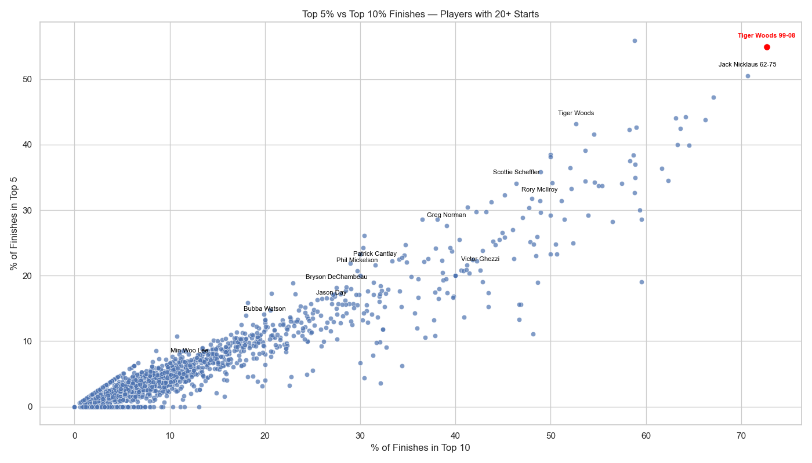

Just How Good Was Tiger Woods? A Data Driven Look at the Greatest Career in Golf.
1 Introduction
Few athletes have ever reshaped a sport like Tiger Woods has done in golf. From the moment he burst onto the scene at the 1997 Masters to his storybook win at Augusta in 2019, Tiger didn’t just win — he redefined what winning meant. His career set new standards for greatness, consistency, resilience, and intimidation.
But how good was Tiger Woods — not in memories or highlight reels, but in cold, hard data?
This blog takes a statistical deep dive into Tiger’s career. We will explore his consistency, his top finishes, his earnings, his hold over the world rankings, and his superiority in advanced metrics like strokes gained. Along the way, we’ll use data to paint a portrait of an athlete who wasn’t just the best — he created an entirely new reality for what “best” could look like.
2 Relentless Excellence: Consistency, Winning, and Finishing at the Top
In professional golf survival is hard enough. Making the cut each week is an achievement by itself (“the cut” refers to a score threshold set after two rounds, eliminating the bottom half of the leaderboard and determining who continues into the weekend). Winning? That is something even the best players only manage a handful of times across years.
Tiger made it look effortless.
From 1998 to 2005, Tiger Woods made 142 consecutive cuts. A PGA Tour record so absurd that no one else has even come close.
During that same stretch, Tiger wasn’t just making weekends, he was winning nearly a quarter of the tournaments he entered.
To really appreciate how far ahead he was, we don’t just compare Tiger to the field we compare him to the second greatest player in history: Jack Nicklaus. Even when we isolate Jack’s prime years (1962–1975), the years when he was at his absolute best, Tiger’s numbers still jump off the page as something unprecedented.
Figure: Cut-making and win percentage across career.
The graph speaks for itself: Tiger’s combination of consistency and winning is practically unmatched. Most pros spend their careers grinding for a few good weeks; Tiger played to win and more often than not, he delivered.
And he didn’t just win. He lived at the top.
Throughout his career Tiger finished in the top 10 in more than half of his starts and during his prime years, he was even more dominant. His top-5 and top-10 rates are so far above the rest of the field and even above prime Nicklaus that they almost break the graph.
 Figure: Top 5 and Top 10 finishes compared to PGA Tour players.
Other great players cluster near the bottom celebrating a few big moments across a career. Tiger existed in a different stratosphere.
3 Career Earnings
If dominance ever needed a scoreboard, it would look a lot like Tiger Woods’ bank account.
Even without adjusting for inflation and the overall growth of the PGA Tour, Tiger’s career earnings tower over everyone else’s. He’s the only player to surpass $120 million in official prize money a total that dwarfs the next closest player, Rory McIlroy, by over $17 million.
Figure: PGA Tour Career Earnings — Top 20 All-Time.
And it’s not just about big purses. Tiger amassed the bulk of his winnings during an era when tournament payouts were smaller than they are today. He didn’t simply ride the wave of golf’s financial boom — he created it. Without Tiger, the money wouldn’t have been there.
In every measurable way: wins, finishes and earnings, Tiger Woods wasn’t just the best - he was in a category of one.
4 Rise and Reign in the Rankings
The World Golf Rankings tell the story of who’s good, who’s rising, and who’s falling. They’re built for chaos — with players climbing and dropping every few weeks based on form, injury, and luck.
But then there’s Tiger Woods.
Figure: World Golf Rankings over time.
From the late 1990s (when the Offical World Golf Rankings was established) through the late 2000s, Tiger didn’t just reach No. 1, he lived there. Week after week, month after month, year after year, Tiger anchored himself at the top while waves of other great players crashed below.
At his peak, Tiger spent 683 weeks as the No. 1 ranked player in the world. That’s over 13 cumulative years — more than double the next closest golfer.
Even when injuries or personal setbacks interrupted him, his dominance was so overwhelming that his “off years” would still be career high years for almost anyone else.
As former World No. 1 Lee Westwood put it,
“It wasn’t a case of who was the best — it was who was the best behind Tiger.”
Tiger didn’t just dominate a season. He built an era.
5 Tiger at the Majors
If regular tournaments showed Tiger’s dominance, the majors showed his ability to rise highest on the biggest stages.
Tiger won 15 major championships, second only to Jack Nicklaus’s 18.
He completed the “Tiger Slam” (holding all four major titles simultaneously), something never done before in the modern era.
His margin of victory at the 2000 U.S. Open was 15 shots, making it the largest in major championship history.
At his best, majors weren’t just tournaments Tiger hoped to win, they were stages he commanded.
There’s a lineage of awe in golf that’s passed from one generation to the next. In 1965, after witnessing Jack Nicklaus’ dominant performance at the Masters, Bobby Jones (widely regarded as the greatest amateur golfer of all time) remarked, “He plays a game with which I am not familiar.” Decades later, Nicklaus found himself on the other side of that sentiment. After playing alongside Tiger Woods, he echoed Jones’ words, acknowledging that Tiger had elevated the game to new heights.
“He plays a game with which I am not familiar.”
In an era filled with talent, Tiger made majors feel like formalities.
6 The Comeback: Masters 2019
No visualization can quite capture what happened at Augusta in 2019. But it remains one of sport’s greatest comeback stories.
After multiple back surgeries, personal upheavals, scandals, and years without a major win, Tiger’s career looked over. Even he admitted:
“I had serious doubts after what transpired a couple years ago. I could barely walk. I couldn’t sit. I couldn’t lay down. I really couldn’t do much of anything.”
But then in a swirl of roars at Augusta National, he did it.
It was his first major win in 11 years.
It was his fifth Masters victory, bringing his major tally to 15.
It was the first time he had ever come from behind to win a major.
As Jim Nantz famously called it
“The return to glory.”
In that moment, Tiger wasn’t just a former champion, he was a living legend, redefining what perseverance and greatness looked like.
7 Final Thoughts
Tiger Woods’s greatness isn’t just in the wins, or the money, or the records, although there are plenty of all three. It is in the way he changed golf forever.
He forced everyone to raise their games. He made fitness, mental strength, and precision prerequisites, not bonuses. He turned golf into a global sport, transcending backgrounds and generations, and in the data — the relentless cut streaks, the top-5 rates, the No. 1 rankings, the earnings gaps we see what our eyes always knew: he was doing something no one else could even dream of doing.
In an age obsessed with numbers, Tiger’s career delivers the rarest thing of all: numbers that don’t just impress — they awe.
As Rory McIlroy once put it:
“If you grew up playing golf, you wanted to be Tiger Woods. You didn’t want to be anyone else.”
And maybe that’s the ultimate measure. In every stat, in every chart, in every round played under pressure — Tiger Woods didn’t just dominate. He redefined greatness itself.